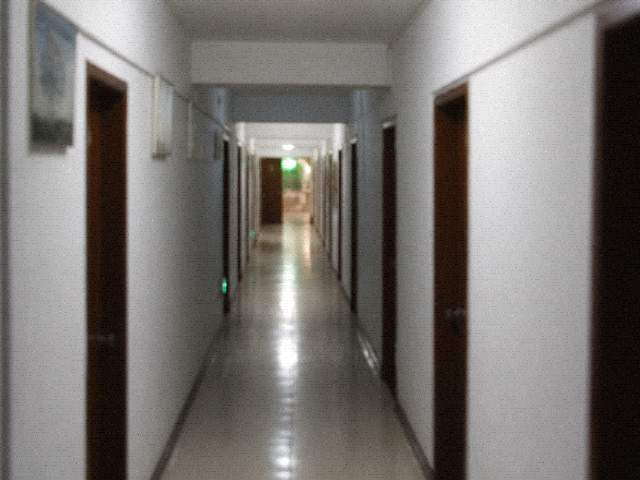

桐县文化馆抄件 无机关徽标

乔干抄。庙里中奉开元皇帝，班里叫老郎。游客叫神仙。叫错了乔干不纠正，纠正也记不住。
碑在西墙。碑文讲寓所、支差，不讲怎么请班，也不讲怎么送。问做法的人请回。
香火账按日登记。夜戏多一炷的时候，账上会多一个外地号后四位。后四位不是名。名在剧团。
本庙不售票。票在文旅。庙开到五点。夜戏开锣时门关。门关了还有人来对账，对账走文化馆抄件。
老郎两个字能搜到碑刻页。搜驱邪搜不到。搜不到是故意的。
槐溪文献
乔干抄。庙务登记附注，文化馆著录卡背面的字，录入网页时多出来几行，几行没删。
本庙中奉开元皇帝，班里叫老郎。游客叫神仙。叫错了不纠正，纠正也记不住。开门到五点。五点下班。五点以后香火账不现场看。要看抄件，先预约，预约电话走文化馆总机，分机写在办公室门上，门上纸条去年换过一次，换完还是那个分机。香按斤进。去年四十二斤，今年到八月用了三十一，剩下的锁在西房铁箱，铁箱钥匙不外借。夜戏多一炷的时候，账上会多一个外地号后四位。后四位不是名。名在剧团。本庙不售票。票在文旅。夜戏开锣时门关。门关了还有人来对账，对账走文化馆抄件，抄件每周一有人预约才抄，没人预约就不翻那年的簿。碑在西墙。碑文讲寓所、支差，不讲怎么请班，也不讲怎么送。问做法的人请回。老郎两个字能搜到碑刻页。搜驱邪搜不到。搜不到是故意的。龛上那块牌是剧团借还第三次留下的，借条在馆里，不在庙门口。别在门口等牌。门口五点落锁。落锁以后别拍门。门板是旧的，拍了掉漆。进货条在西房铁箱第二层，跟剩下的香放一起。香是去年那批，四十二斤进，到八月还剩十一斤不到。不到的数这页不写，写在进货条。进货条不外借。外借有人当配方。配方没有。有的是斤和炷。炷按日。日到五点。五点钥匙出馆。出馆不对账。